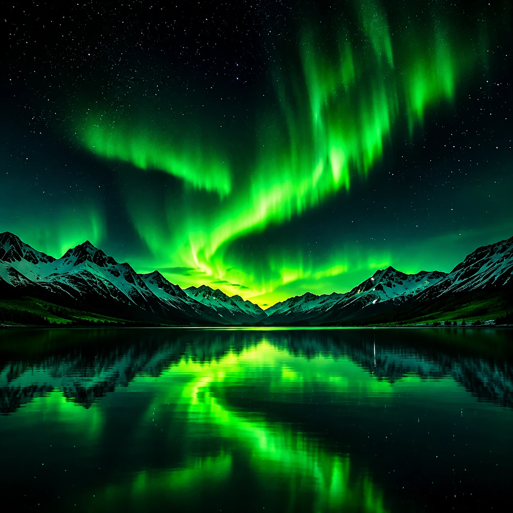
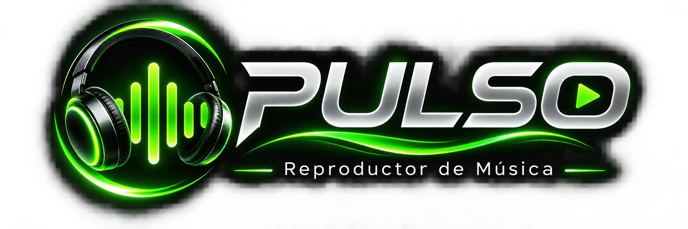

Selecciona una canción
Tu biblioteca musical
0:00
0:00
Siguiente en reproducción
Tu próxima música aparecerá aquí.


Tu biblioteca musical
PULSO conserva su identidad visual en verde neón, negro y acabados metálicos.